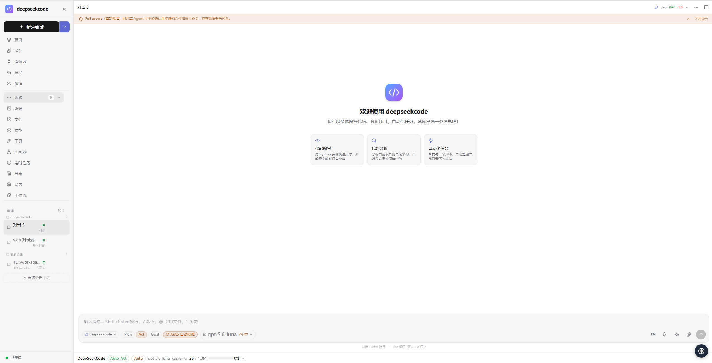
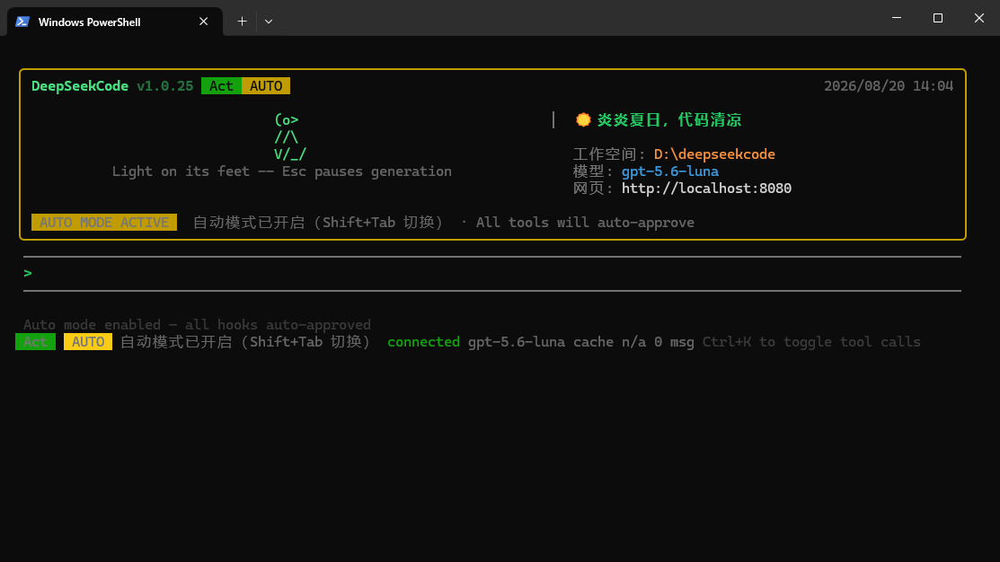

01
Understand
Read project context, files, history, and the task before acting.
DeepSeekCode reúne planificación, herramientas, Skills, Connectors, Plugins y contexto con caché en un espacio extensible.

Move from a rough idea to a reviewed change with visible modes, tools, context, and checkpoints.
Read project context, files, history, and the task before acting.
Break complex work into a plan you can inspect and adjust.
Use tools, Skills, and Connectors to make the next change.
Inspect commands, diffs, logs, and results with clear checkpoints.
Keep a larger objective moving across focused tasks.
Combine an agent with extensions and controls that make it useful in real projects.
Your workspace, logs, and configuration stay under your control.
Read files, search code, edit projects, run commands, and iterate in natural language.
Choose the structure your task needs, from a quick fix to a multi-step objective.
Package repeatable expertise as readable skills for standards, releases, tests, and domain work.
Bring services, channels, and external context into the workflow when needed.
Extend commands, tools, UI, and integrations without changing the core agent.
Reuse relevant context across iterations and make cache state visible while you work.
Combine file operations, terminal commands, permissions, schedules, and automation.
Move between a visual workspace, terminal, and native app without changing your agent.
Use the visual workspace for context, the terminal for speed, and the same agent underneath.
Manage sessions, workspaces, models, modes, tools, Skills, Connectors, and Plugins in one focused interface.

Launch tasks from PowerShell with visible model, workspace, connection, and automation status.
Keep the agent grounded in project context and make reuse visible across multi-step work.
Compose capabilities instead of rebuilding your tools from scratch.
Compose capabilities instead of rebuilding your tools from scratch.
Compose capabilities so the agent grows with your project.
A fast path for developers who want a terminal-first experience with the local server and Web UI close by.
Install the CLI package and use the dscode command anywhere.
npm install -g @deepseekcode/cli
dscode --versionRequires Node.js 18+. Provides dscode and deepseekcode commands.
Already using Bun? Keep the setup lightweight.
bun add -g @deepseekcode/cli
dscode --versionRequires Bun. The CLI connects to the local server and Web UI.
Open a workspace and let the agent help you plan the next move.
dscode run
# local Web UI
http://localhost:8080Configure a model provider, then open a project workspace.
Uso no interactivo para scripts, hooks y CI: dscode exec "<tarea>" ejecuta una tarea y emite JSONL.
Install the desktop app for a native experience, or start with the CLI. Release assets are generated for the platforms below.
The essentials before you bring DeepSeekCode into your workflow.
It is an AI coding workspace that complements your editor. Use it to understand projects, plan work, edit files, run tools, and review changes.
The runtime is local-first and workspace data is designed to stay on your machine. Model providers still receive requests you send to them, so configure providers for your privacy requirements.
Yes. The CLI provides a terminal-native experience and works alongside the local server and Web UI.
Skills, Connectors, Plugins, MCP tools, hooks, and model providers let you adapt DeepSeekCode to a project or team.
No. Cache behavior depends on the provider and request. DeepSeekCode makes reuse and status more visible; it does not promise a fixed cost reduction.